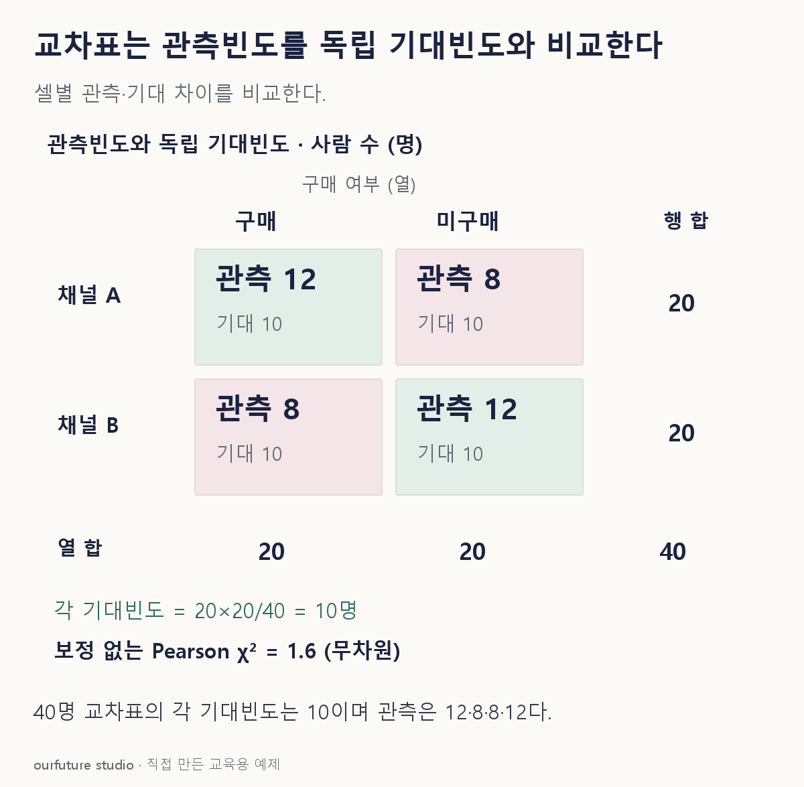

조건을 바꾸며 확인하기
관측 독립·40명·2×2표·보정 없음. 검정 p값이나 인과관계를 계산하지 않는다.
기본 예제와 비교하기
아래 그림과 표는 글의 기본 조건입니다. 입력을 바꾼 결과는 계산 칸에서 확인하세요.

같은 문제를 직접 골라 보기
교차표에서 A행 합 20, 구매열 합 20, 전체 40명이다.
조건을 더 바꾸면?
예제 표의 네 관측빈도는 12·8·8·12이고 각 기대빈도는 10이다. 연속성 보정 없는 Pearson χ²는?
변형 풀이 확인
1.6.
네 셀의 기여가 모두 (2²)/10=0.4이므로 합은 1.6이다. 보정 옵션을 켠 소프트웨어 결과와 무조건 같다고 가정하지 않는다.
기대 셀은 행 합 곱하기 열 합, 전체로 나누기.